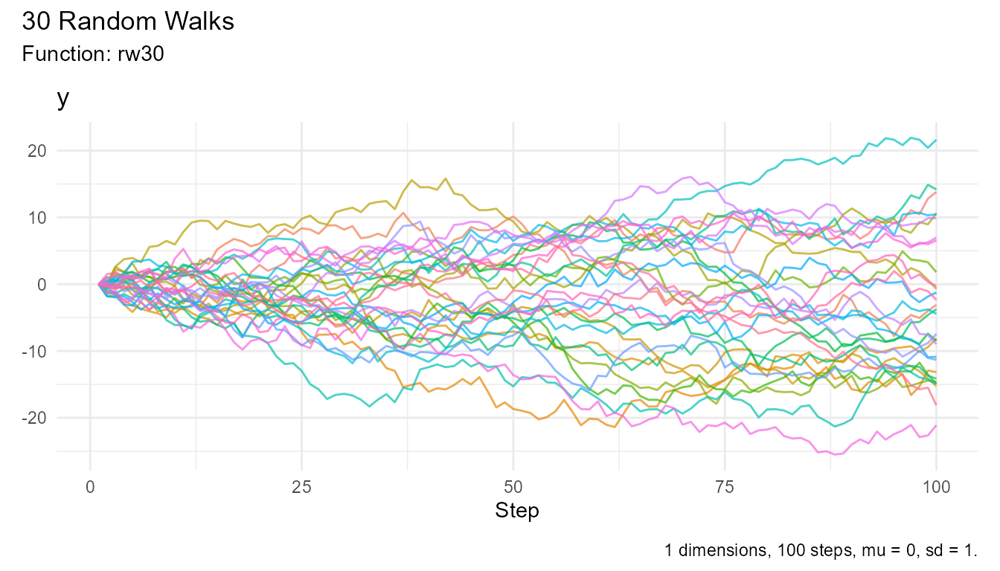
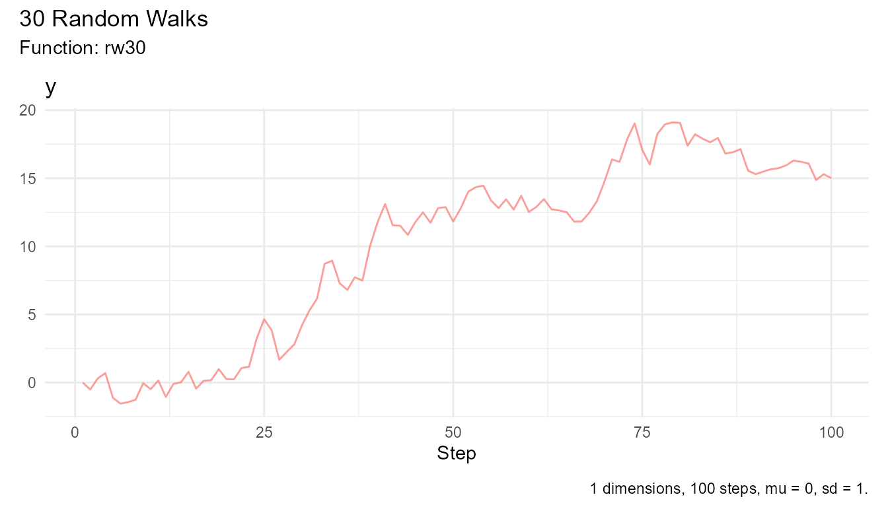
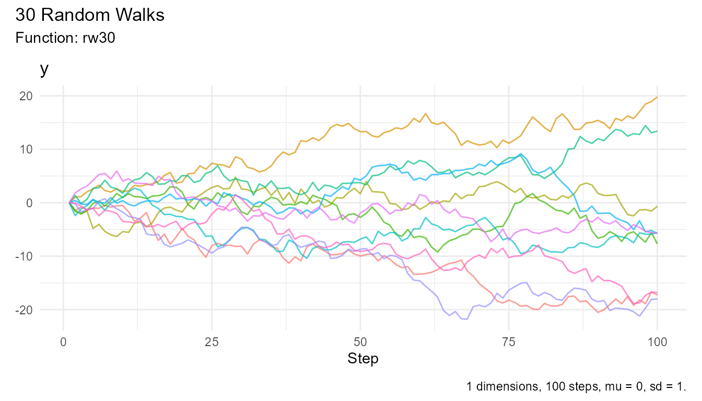
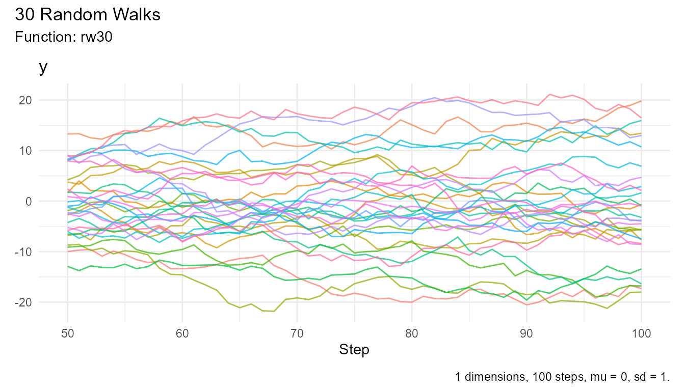
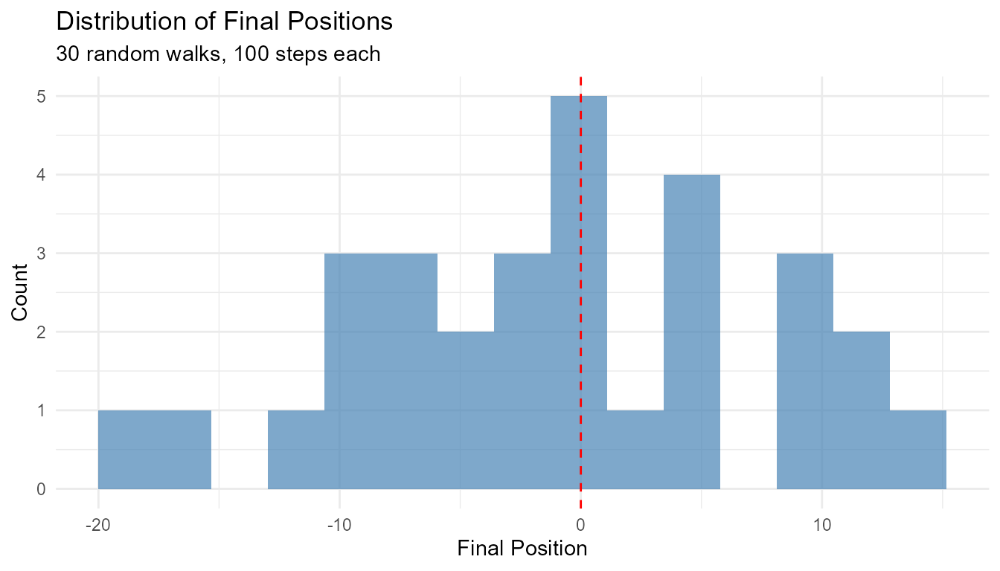
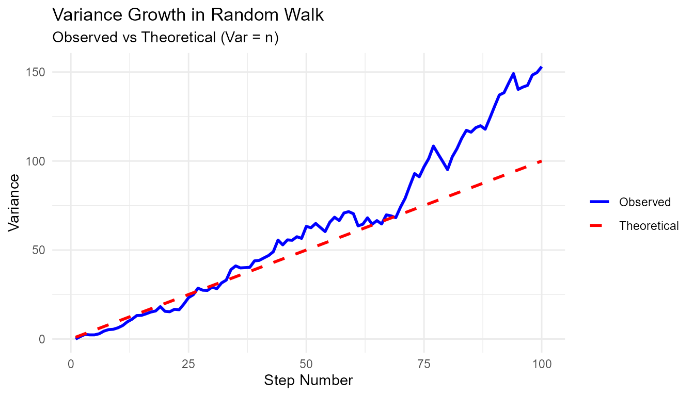
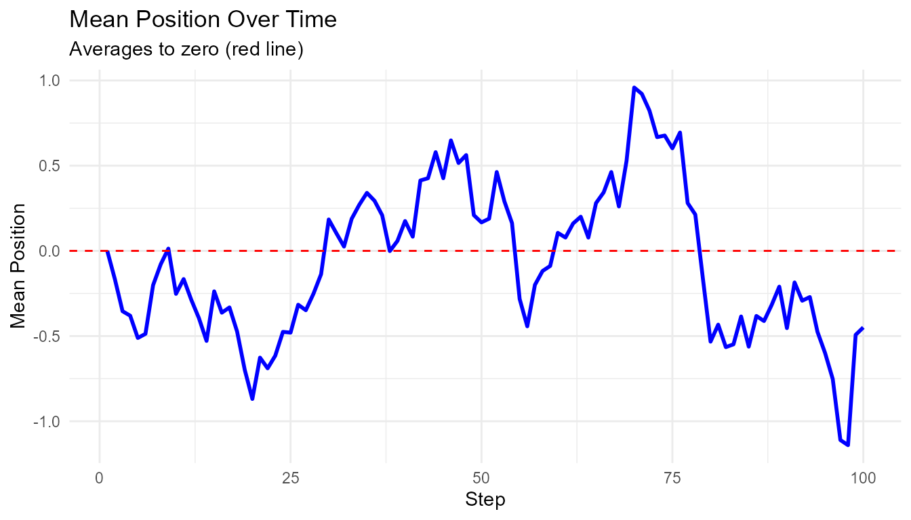
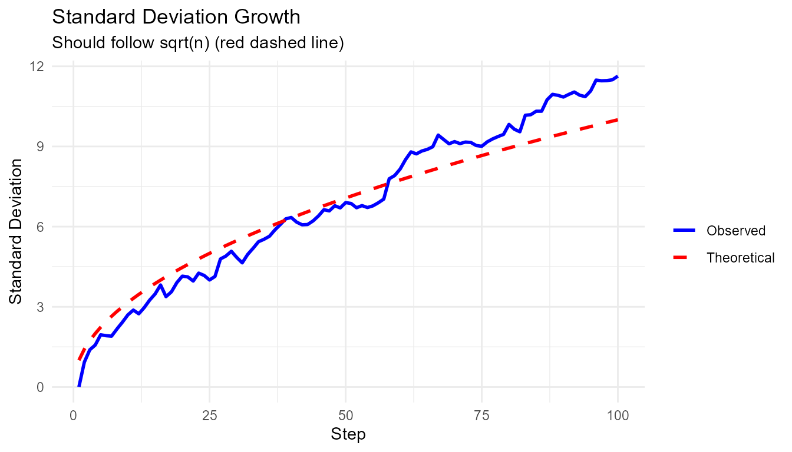
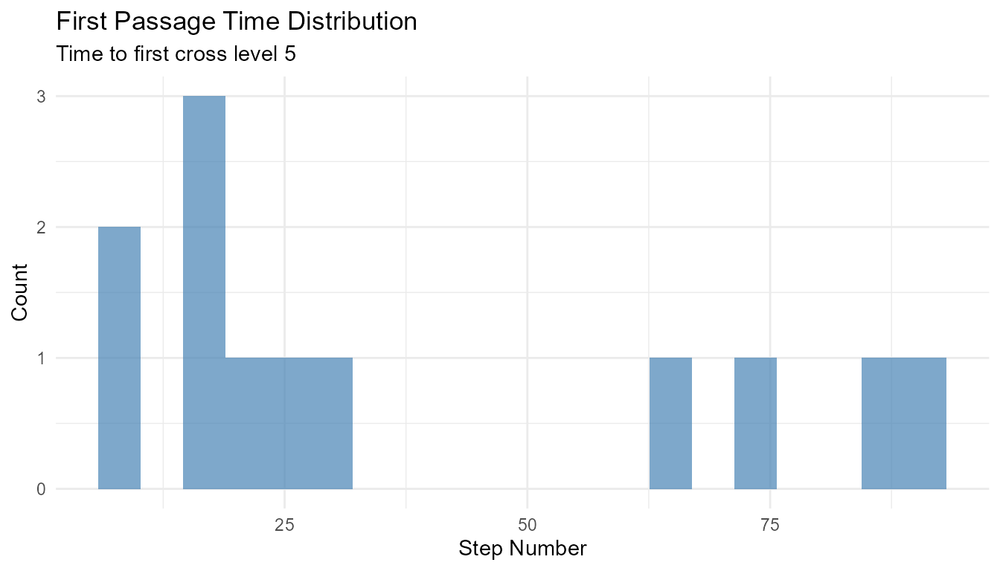
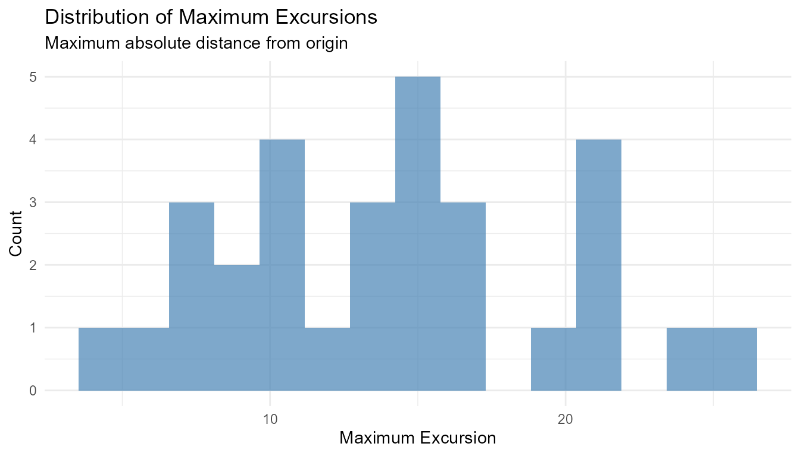

The simplest way to generate random walks with RandomWalker is using
the automatic function rw30().
Overview
RandomWalker provides rw30() as a quick way to generate
random walks without specifying any parameters. This is perfect for:
- Quick demonstrations
- Learning and teaching
- Prototyping
- Exploratory analysis
The rw30() Function
What rw30() Does
The rw30() function: 1. Generates 30 random
walks 2. Each with 100 steps 3. Using
normal distribution (mean = 0, sd = 1) 4. Starting at
0 5. Returns a tidy tibble
It’s equivalent to:
random_normal_walk(
.num_walks = 30,
.n = 100,
.mu = 0,
.sd = 1,
.initial_value = 0,
.dimensions = 1
)Output Structure
rw30()
#> # A tibble: 3,000 × 3
#> walk_number step_number y
#> <fct> <int> <dbl>
#> 1 1 1 0
#> 2 1 2 2.08
#> 3 1 3 4.00
#> 4 1 4 4.07
#> 5 1 5 4.34
#> 6 1 6 4.78
#> 7 1 7 5.99
#> 8 1 8 4.73
#> 9 1 9 6.50
#> 10 1 10 6.34
#> # ℹ 2,990 more rowsColumns: - walk_number: Factor (1-30)
identifying each walk - step_number: Integer (1-100) for
each step - y: The random walk values
Note: Cumulative columns such as cum_sum,
cum_prod, cum_min, cum_max, and
cum_mean are not included by default. You can add them
using rand_walk_helper() or tidyverse operations if
needed. ## Understanding the Output
Attributes
The function stores metadata:
walks <- rw30()
atb <- attributes(walks)
atb[!names(atb) %in% c("row.names", "class")]
#> $names
#> [1] "walk_number" "step_number" "y"
#>
#> $num_walks
#> [1] 30
#>
#> $num_steps
#> [1] 100
#>
#> $mu
#> [1] 0
#>
#> $sd
#> [1] 1
#>
#> $fns
#> [1] "rw30"
#>
#> $dimension
#> [1] 1Common Usage Patterns
Pattern 1: Quick Visualization
# One line to plot
rw30() |> visualize_walks()
# Interactive exploration
rw30() |> visualize_walks(.interactive = TRUE)Pattern 2: Statistical Analysis
# Overall statistics
rw30() |> summarize_walks(.value = y) |>
head()
#> Registered S3 method overwritten by 'quantmod':
#> method from
#> as.zoo.data.frame zoo
#> Warning: There was 1 warning in `dplyr::summarize()`.
#> ℹ In argument: `geometric_mean = exp(mean(log(y)))`.
#> Caused by warning in `log()`:
#> ! NaNs produced
#> # A tibble: 1 × 16
#> fns fns_name dimensions mean_val median range quantile_lo quantile_hi
#> <chr> <chr> <dbl> <dbl> <dbl> <dbl> <dbl> <dbl>
#> 1 rw30 Rw30 1 1.42 1.22 49.3 -14.3 16.5
#> # ℹ 8 more variables: variance <dbl>, sd <dbl>, min_val <dbl>, max_val <dbl>,
#> # harmonic_mean <dbl>, geometric_mean <dbl>, skewness <dbl>, kurtosis <dbl>
# By walk
rw30() |>
summarize_walks(.value = y, .group_var = walk_number) |>
head(10)
#> Warning: There were 28 warnings in `dplyr::summarize()`.
#> The first warning was:
#> ℹ In argument: `geometric_mean = exp(mean(log(y)))`.
#> ℹ In group 1: `walk_number = 1`.
#> Caused by warning in `log()`:
#> ! NaNs produced
#> ℹ Run `dplyr::last_dplyr_warnings()` to see the 27 remaining warnings.
#> # A tibble: 10 × 17
#> walk_number fns fns_name dimensions mean_val median range quantile_lo
#> <fct> <chr> <chr> <dbl> <dbl> <dbl> <dbl> <dbl>
#> 1 1 rw30 Rw30 1 -11.6 -11.8 22.9 -21.8
#> 2 2 rw30 Rw30 1 5.31 5.24 11.3 0.953
#> 3 3 rw30 Rw30 1 -6.67 -7.08 15.9 -13.8
#> 4 4 rw30 Rw30 1 11.2 11.6 18.1 2.54
#> 5 5 rw30 Rw30 1 1.14 1.06 10.2 -2.39
#> 6 6 rw30 Rw30 1 -4.35 -4.32 13.8 -11.7
#> 7 7 rw30 Rw30 1 8.56 8.86 20.6 -0.796
#> 8 8 rw30 Rw30 1 5.96 6.54 14.1 -2.20
#> 9 9 rw30 Rw30 1 -1.42 -1.42 10.0 -5.75
#> 10 10 rw30 Rw30 1 -0.835 -0.704 10.2 -4.81
#> # ℹ 9 more variables: quantile_hi <dbl>, variance <dbl>, sd <dbl>,
#> # min_val <dbl>, max_val <dbl>, harmonic_mean <dbl>, geometric_mean <dbl>,
#> # skewness <dbl>, kurtosis <dbl>
# Custom analysis
rw30() |>
group_by(walk_number) |>
summarize(
final_value = last(y),
max_value = max(y),
min_value = min(y),
volatility = sd(y)
) |>
head(10)
#> # A tibble: 10 × 5
#> walk_number final_value max_value min_value volatility
#> <fct> <dbl> <dbl> <dbl> <dbl>
#> 1 1 2.82 2.95 -8.95 2.92
#> 2 2 -27.0 1.14 -27.0 7.77
#> 3 3 -8.33 1.85 -11.2 2.86
#> 4 4 -10.4 0.938 -13.3 3.24
#> 5 5 10.8 12.3 -2.20 3.67
#> 6 6 -6.39 3.53 -16.9 5.62
#> 7 7 0.240 4.65 -7.20 2.84
#> 8 8 -12.0 0.553 -12.3 3.24
#> 9 9 6.88 10.2 -6.06 4.37
#> 10 10 11.7 17.5 -3.05 5.22Pattern 3: Finding Extremes
# Walk that went highest
max_walk <- rw30() |>
subset_walks(.value = "y", .type = "max")
# Walk that went lowest
min_walk <- rw30() |>
subset_walks(.value = "y", .type = "min")
# Visualize extremes
max_walk |> visualize_walks()
Pattern 4: Filtering and Subsetting
walks <- rw30()
# Get only first 10 walks
walks |>
filter(walk_number %in% as.character(1:10)) |>
visualize_walks()
# Get steps 50-100 only
walks |>
filter(step_number >= 50) |>
visualize_walks()
Pattern 5: Teaching Demonstrations
# Show variability
walks <- rw30()
# Distribution of final positions
walks |>
group_by(walk_number) |>
slice_max(step_number) |>
ggplot(aes(x = y)) +
geom_histogram(bins = 15, fill = "steelblue", alpha = 0.7) +
geom_vline(xintercept = 0, color = "red", linetype = "dashed") +
theme_minimal() +
labs(
title = "Distribution of Final Positions",
subtitle = "30 random walks, 100 steps each",
x = "Final Position",
y = "Count"
)
Pattern 6: Comparing to Theory
# Test if variance grows linearly with steps
walks <- rw30()
variance_by_step <- walks |>
group_by(step_number) |>
reframe(
variance = var(y),
theoretical = step_number # For N(0,1), var = n
)
ggplot(variance_by_step, aes(x = step_number)) +
geom_line(aes(y = variance, color = "Observed"), linewidth = 1) +
geom_line(aes(y = theoretical, color = "Theoretical"), linewidth = 1, linetype = "dashed") +
scale_color_manual(values = c("Observed" = "blue", "Theoretical" = "red")) +
theme_minimal() +
labs(
title = "Variance Growth in Random Walk",
subtitle = "Observed vs Theoretical (Var = n)",
x = "Step Number",
y = "Variance",
color = ""
)
When to Use rw30()
✅ Use rw30() When:
- Learning: First time using RandomWalker
- Demos: Quick demonstrations
- Teaching: Showing random walk concepts
- Prototyping: Testing visualization or analysis code
- Exploratory: Quick data exploration
❌ Don’t Use rw30() When:
-
Custom parameters needed: Use
random_normal_walk()instead - Different distribution: Use specific generator functions
- Different number of walks: rw30() always generates 30
- Multi-dimensional: rw30() is 1D only
- Production code: Use explicit generator functions for clarity
Limitations
Fixed Parameters
rw30() has no parameters, which means:
# ❌ Can't change number of walks
# rw30(.num_walks = 50) # Error!
# ✅ Use random_normal_walk() instead
random_normal_walk(.num_walks = 50)
# ❌ Can't change number of steps
# rw30(.n = 200) # Error!
# ✅ Use random_normal_walk() instead
random_normal_walk(.n = 200)
# ❌ Can't change distribution parameters
# rw30(.mu = 0.1) # Error!
# ✅ Use random_normal_walk() instead
random_normal_walk(.mu = 0.1)Only Normal Distribution
rw30() uses normal distribution exclusively:
# ❌ Can't use other distributions
# rw30(.distribution = "cauchy") # Not possible!
# ✅ Use specific generator functions
random_cauchy_walk(.num_walks = 30)
geometric_brownian_motion(.num_walks = 30)
discrete_walk(.num_walks = 30)Only 1D
rw30() generates 1D walks only:
# ❌ Can't create 2D walks
# rw30(.dimensions = 2) # Error!
# ✅ Use random_normal_walk()
random_normal_walk(.num_walks = 30, .dimensions = 2)Alternatives to rw30()
When rw30() doesn’t fit your needs:
For Custom Parameters
# Instead of rw30()
random_normal_walk(
.num_walks = 30,
.n = 100,
.mu = 0,
.sd = 1,
.initial_value = 0
)
# With custom parameters
random_normal_walk(
.num_walks = 50,
.n = 200,
.mu = 0.05,
.sd = 0.5,
.initial_value = 100
)For Different Distributions
# Geometric Brownian Motion (like rw30 but for stocks)
geometric_brownian_motion(
.num_walks = 30,
.n = 100,
.initial_value = 100
)
# Heavy-tailed walks
random_cauchy_walk(
.num_walks = 30,
.n = 100
)
# Discrete walks
discrete_walk(
.num_walks = 30,
.n = 100
)For Multi-Dimensional
# 2D walks
random_normal_walk(
.num_walks = 30,
.n = 100,
.dimensions = 2
)
# 3D walks
random_normal_walk(
.num_walks = 30,
.n = 100,
.dimensions = 3
)Complete Examples
Example 1: Teaching Random Walk Properties
# Generate walks
walks <- rw30()
# Show that mean displacement is zero
walks |>
group_by(step_number) |>
summarize(mean_position = mean(y)) |>
ggplot(aes(x = step_number, y = mean_position)) +
geom_line(color = "blue", linewidth = 1) +
geom_hline(yintercept = 0, linetype = "dashed", color = "red") +
theme_minimal() +
labs(
title = "Mean Position Over Time",
subtitle = "Averages to zero (red line)",
x = "Step",
y = "Mean Position"
)
# Show that standard deviation grows as sqrt(n)
walks |>
group_by(step_number) |>
reframe(
sd_position = sd(y),
theoretical = sqrt(step_number)
) |>
ungroup() |>
ggplot(aes(x = step_number)) +
geom_line(aes(y = sd_position, color = "Observed"), linewidth = 1) +
geom_line(aes(y = theoretical, color = "Theoretical"), linewidth = 1, linetype = "dashed") +
scale_color_manual(values = c("Observed" = "blue", "Theoretical" = "red")) +
theme_minimal() +
labs(
title = "Standard Deviation Growth",
subtitle = "Should follow sqrt(n) (red dashed line)",
x = "Step",
y = "Standard Deviation",
color = ""
)
Example 2: First Passage Time
# Find when walks first cross a threshold
walks <- rw30()
first_crossing <- walks |>
group_by(walk_number) |>
filter(y >= 5) |>
slice_min(step_number, n = 1) |>
select(walk_number, first_crossing_time = step_number)
# Some walks may never cross
n_crossed <- nrow(first_crossing)
cat(sprintf("%d out of 30 walks crossed 5\n", n_crossed))
#> 12 out of 30 walks crossed 5
# Distribution of first crossing times
if (n_crossed > 0) {
ggplot(first_crossing, aes(x = first_crossing_time)) +
geom_histogram(bins = 20, fill = "steelblue", alpha = 0.7) +
theme_minimal() +
labs(
title = "First Passage Time Distribution",
subtitle = "Time to first cross level 5",
x = "Step Number",
y = "Count"
)
}
Example 3: Maximum Excursion
# Find maximum distance from origin
walks <- rw30()
max_excursion <- walks |>
group_by(walk_number) |>
summarize(
max_positive = max(y),
max_negative = min(y),
max_excursion = max(abs(y))
)
# Visualize
max_excursion |>
ggplot(aes(x = max_excursion)) +
geom_histogram(bins = 15, fill = "steelblue", alpha = 0.7) +
theme_minimal() +
labs(
title = "Distribution of Maximum Excursions",
subtitle = "Maximum absolute distance from origin",
x = "Maximum Excursion",
y = "Count"
)
Next Steps
Once you’re comfortable with rw30(), explore:
-
Getting Started Guide - Learn more random walk
functions with
vignette("getting-started") - Function Reference - Explore all distributions at the package website
-
Home Wiki - Learn about visualization and
statistical analysis with
vignette("home")
Ready for more control? Check out the function reference for customizable random walks!